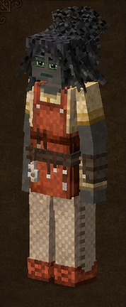
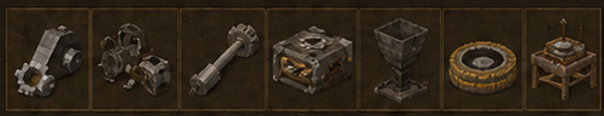

Relojero
Clockmaker · código oficial
clockmaker · ficha 05/16
Rasgos: 8
Bonus: 9
Malus: 5
Recetas: 62

Resumen humano
técnico de late game. Sus desbloqueos pesan más que sus stats iniciales.
Esta línea es interpretación funcional breve; lo importante son los números y recetas de abajo.
Bonus objetivos
- altura de salto: **+20%** (valor interno `0.2`)
- daño a distancia: **+20%** (valor interno `0.2`)
- daño contra mecánicos: **+50%** (valor interno `0.5`)
- daño recibido de mecánicos: **-50%** (valor interno `-0.5`)
- drop de engranajes temporales: **+100%** (valor interno `1`)
- drop de grasa: **+100%** (valor interno `1`)
- ganancia de estabilidad temporal: **+50%** (valor interno `0.5`)
- probabilidad de resina desde hojas: **+1%** (valor interno `0.01`)
- velocidad al caminar: **+10%** (valor interno `0.1`)
Malus objetivos
- daño recibido global: **+10%** (valor interno `0.1`)
- daño recibido por veneno: **+100%** (valor interno `1`)
- drop de frutales: **-75%** (valor interno `-0.75`)
- drop de semillas cultivadas: **-75%** (valor interno `-0.75`)
- drop de semillas/brotes de árbol: **-75%** (valor interno `-0.75`)
Rasgos oficiales y efectos reales
| Rasgo | Tipo | Datos objetivos |
|---|---|---|
Lancerolancer | positivo | altura de salto: +20% (interno 0.2)daño a distancia: +20% (interno 0.2)velocidad al caminar: +10% (interno 0.1)daño recibido global: +10% (interno 0.1) |
Relojeroclockmaker | positivo | sin atributos numéricos en traits.json; desbloqueo/rasgo de receta |
Manitastinkerer | desbloqueo/vanilla | sin atributos numéricos en traits.json; desbloqueo/rasgo de receta |
Técnicotechnical | desbloqueo/vanilla | sin atributos numéricos en traits.json; desbloqueo/rasgo de receta |
Ingenieroengineer | positivo | daño contra mecánicos: +50% (interno 0.5)daño recibido de mecánicos: -50% (interno -0.5)drop de grasa: +100% (interno 1)probabilidad de resina desde hojas: +1% (interno 0.01) |
Armónicoattuned | positivo | drop de engranajes temporales: +100% (interno 1)ganancia de estabilidad temporal: +50% (interno 0.5) |
Recolector pobrescourer | negativo | drop de semillas cultivadas: -75% (interno -0.75)drop de semillas/brotes de árbol: -75% (interno -0.75)drop de frutales: -75% (interno -0.75) |
Delicadosensitive | negativo | daño recibido por veneno: +100% (interno 1) |
Recetas / desbloqueos
35mesa normal
15estación
12compatibilidad
62salidas listadas
Categorías detectadas
Mecánica y transmisión de potencia: 19Mesa de inventor/relojería: 15Piezas Jonas y componentes antiguos: 14Millwright: potencia mecánica: 12Teletransportadores: 2
Ver salidas exactas de recetas de esta clase (62)
| Modo | Categoría legible | Resultado legible | Nombre ES |
|---|---|---|---|
| mesa de crafteo normal | Piezas Jonas y componentes antiguos | Jonasparts connector01 ×1 | — |
| mesa de crafteo normal | Piezas Jonas y componentes antiguos | Jonasparts cylinder01 ×1 | — |
| mesa de crafteo normal | Piezas Jonas y componentes antiguos | Jonasparts cylinder02 ×1 | — |
| mesa de crafteo normal | Piezas Jonas y componentes antiguos | Jonasparts tank01 ×1 | — |
| mesa de crafteo normal | Piezas Jonas y componentes antiguos | Jonasparts tank02 ×1 | — |
| mesa de crafteo normal | Piezas Jonas y componentes antiguos | Jonasparts valve01 ×1 | — |
| mesa de crafteo normal | Piezas Jonas y componentes antiguos | Jonasframes gearbox01 ×1 | — |
| mesa de crafteo normal | Piezas Jonas y componentes antiguos | Jonasframes gearbox02 ×1 | — |
| mesa de crafteo normal | Piezas Jonas y componentes antiguos | Jonasframes oscillator01 ×1 | — |
| mesa de crafteo normal | Piezas Jonas y componentes antiguos | Jonasframes spring01 ×1 | — |
| mesa de crafteo normal | Piezas Jonas y componentes antiguos | Jonasframes joint01 ×1 | — |
| mesa de crafteo normal | Piezas Jonas y componentes antiguos | Jonasframes gears01 ×1 | — |
| mesa de crafteo normal | Piezas Jonas y componentes antiguos | Jonasframes gears02 ×1 | — |
| mesa de crafteo normal | Piezas Jonas y componentes antiguos | Jonasparts connector01 ×1 | — |
| mesa de crafteo normal | Mecánica y transmisión de potencia | Windmillrotor Madera y carpintería norte ×2 | — |
| mesa de crafteo normal | Mecánica y transmisión de potencia | Woodenaxle vertical ×8 | — |
| mesa de crafteo normal | Mecánica y transmisión de potencia | Angledgears s ×4 | — |
| mesa de crafteo normal | Mecánica y transmisión de potencia | Brake norte ×2 | — |
| mesa de crafteo normal | Mecánica y transmisión de potencia | Helvehammerbase norte ×2 | — |
| mesa de crafteo normal | Mecánica y transmisión de potencia | Woodentoggle norte-sur ×2 | — |
| mesa de crafteo normal | Mecánica y transmisión de potencia | Largegearsection Madera y carpintería ×2 | — |
| mesa de crafteo normal | Mecánica y transmisión de potencia | Clutch norte ×2 | — |
| mesa de crafteo normal | Mecánica y transmisión de potencia | Transmission norte-sur ×2 | — |
| mesa de crafteo normal | Mecánica y transmisión de potencia | Archimedesscrew straight ×2 | — |
| mesa de crafteo normal | Mecánica y transmisión de potencia | Archimedesscrew ported norte ×2 | — |
| mesa de crafteo normal | Mecánica y transmisión de potencia | Spurgear s ×2 | — |
| mesa de crafteo normal | Mecánica y transmisión de potencia | Windmillrotor metal norte ×2 | — |
| mesa de crafteo normal | Mecánica y transmisión de potencia | Hopper ×1 | — |
| mesa de crafteo normal | Mecánica y transmisión de potencia | Chute elbow abajo este ×4 | — |
| mesa de crafteo normal | Mecánica y transmisión de potencia | Chute straight norte-sur ×8 | — |
| mesa de crafteo normal | Mecánica y transmisión de potencia | Chute cross ground ×4 | — |
| mesa de crafteo normal | Mecánica y transmisión de potencia | Chute t norte-sur ×4 | — |
| mesa de crafteo normal | Mecánica y transmisión de potencia | Chute 3way abajo este ×4 | — |
| mesa de crafteo normal | Teletransportadores | Basereturnteleporter ×1 | — |
| mesa de crafteo normal | Teletransportadores | Gear temporal ×1 | — |
| estación especial | Mesa de inventor/relojería | Metal parts ×4 | — |
| estación especial | Mesa de inventor/relojería | Metal parts ×4 | — |
| estación especial | Mesa de inventor/relojería | Jonasframes gearbox01 ×1 | — |
| estación especial | Mesa de inventor/relojería | Jonasframes gearbox02 ×1 | — |
| estación especial | Mesa de inventor/relojería | Jonasframes oscillator01 ×1 | — |
| estación especial | Mesa de inventor/relojería | Jonasframes spring01 ×1 | — |
| estación especial | Mesa de inventor/relojería | Jonasframes joint01 ×1 | — |
| estación especial | Mesa de inventor/relojería | Jonasframes gears01 ×1 | — |
| estación especial | Mesa de inventor/relojería | Jonasframes gears02 ×1 | — |
| estación especial | Mesa de inventor/relojería | Jonasparts connector01 ×1 | — |
| estación especial | Mesa de inventor/relojería | Jonasparts cylinder01 ×1 | — |
| estación especial | Mesa de inventor/relojería | Jonasparts cylinder02 ×1 | — |
| estación especial | Mesa de inventor/relojería | Jonasparts tank01 ×1 | — |
| estación especial | Mesa de inventor/relojería | Jonasparts tank02 ×1 | — |
| estación especial | Mesa de inventor/relojería | Jonasparts valve01 ×1 | — |
| receta de compatibilidad | Millwright: potencia mecánica | Improvedaxlepassthroughfull ×1 | — |
| receta de compatibilidad | Millwright: potencia mecánica | Windmillrotor single norte ×1 | — |
| receta de compatibilidad | Millwright: potencia mecánica | Windmillrotor double norte ×1 | — |
| receta de compatibilidad | Millwright: potencia mecánica | Windmillrotor double norte ×1 | — |
| receta de compatibilidad | Millwright: potencia mecánica | Windmillrotor three norte ×1 | — |
| receta de compatibilidad | Millwright: potencia mecánica | Windmillrotor three norte ×1 | — |
| receta de compatibilidad | Millwright: potencia mecánica | Windmillrotor six norte ×1 | — |
| receta de compatibilidad | Millwright: potencia mecánica | Windmillrotor six norte ×1 | — |
| receta de compatibilidad | Millwright: potencia mecánica | Windmillrotor single norte ×1 | — |
| receta de compatibilidad | Millwright: potencia mecánica | Windmillrotor single norte ×1 | — |
| receta de compatibilidad | Millwright: potencia mecánica | Windmillrotorud three up ×1 | — |
| receta de compatibilidad | Millwright: potencia mecánica | Brake norte ×1 | — |
Archivos de esta ficha
Las exportaciones PNG/MD se generan desde la ficha dinámica actual.